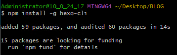
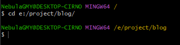

博客安装指导和测试页
本文最后更新于：12 分钟前
通过这篇文章记录Hexo博客的搭建方法，以便在需要的时候可以快速搭建。
搭建博客
安装所需软件
安装Hexo
以上两款软件安装完成后，即可开始安装Hexo：Hexo 官方文档
建立一个空的新建文件夹，打开此文件夹右键空白处从右键菜单中选择
Git Bash Here。在命令行中输入命令
npm install -g hexo-cli待运行完成，若没有报错则安装成功。命令行显示的输出结果

输入
hexo --version检查hexo版本，输出结果如下
初始化博客文件
在命令行通过
cd命令进入博客文件夹。结果如图所示
通过以下两条命令初始化hexo博客
hexo init npm install初始化完成后，博客文件夹会多出一些文件和文件夹
. ├── _config.yml # 配置文件 ├── package.json # 安装应用程序的信息 ├── scaffolds # 模板文件夹 | ├── post.md # 文章模板 | ├── page.md | └── draft.md ├── source # 资源文件夹 | └── _posts | └── hello-world.md └── themes # 主题文件夹 └── landscape
设置主题
可以在修改配置之前，先安装一个主题，这里以一个我现在用的主题为例：Fluid Github页面 | Fluid 用户手册
安装Fluid主题
npm install --save hexo-theme-fluid进入博客文件夹，新建一个文件命名为
_config.fluid.yml，将以下内容复制到文件中
修改配置文件
现在你应该拥有两个配置文件，分别是_config.yml和_config.fluid.yml。接下来需要修改配置添加个性化内容（仅展示修改的内容）。
_config.yml
配置文件 _config.ymltitle: 星云喵喵GMYの小屋 subtitle: 有好多多的可爱猫娘 description: 爱猫娘，也爱编程 keywords: author: NebulaGMY language: zh-CN timezone: '' # URL ## 在此处设置网站url。例如，如果您使用GitHub页面，请将url设置为 'https://username.github.io/project' url: https://GMYNebula.github.io permalink: posts/:abbrlink.html # 修改文章的链接，详情见：https://hexo.io/zh-cn/docs/permalinks permalink_defaults: pretty_urls: trailing_index: true # Set to false to remove trailing 'index.html' from permalinks trailing_html: true # Set to false to remove trailing '.html' from permalinks # Extensions ## Plugins: https://hexo.io/plugins/ ## Themes: https://hexo.io/themes/ theme: fluid # 可以在此设置主题 # Deployment ## Docs: https://hexo.io/docs/one-command-deployment deploy: type: git # 线上部署方式 repo: https://github.com/GMYNebula/GMYNebula.github.io # 部署地址 branch: master # 部署的分支，现在默认为main_config.fluid.yml
配置文件 _config.fluid.yml配置中资源的根目录为source，将要替换的图片放到这个文件夹中。
favicon: /img/202272_60x60_color.png apple_touch_icon: /img/202272_60x60_color.png tab_title_separator: " - " # 导航栏的相关配置 navbar: # 导航栏左侧的标题，为空则按 hexo config 中 `title` 显示 blog_title: "NebulaGMY" # 导航栏毛玻璃特效，实验性功能，可能会造成页面滚动掉帧和抖动，部分浏览器不支持会自动不生效 ground_glass: enable: false # 模糊像素，只能为数字，数字越大模糊度越高 px: 3 # 不透明度，数字越大透明度越低，注意透明过度可能看不清菜单字体 alpha: 0.7 # 导航栏菜单，可自行增减，key 用来关联 languages/*.yml，如不存在关联则显示 key 本身的值；icon 是 css class，可以省略；增加 name 可以强制显示指定名称 menu: - { key: "home", link: "/", icon: "iconfont icon-home-fill" } - { key: "archive", link: "/archives/", icon: "iconfont icon-archive-fill" } - { key: "category", link: "/categories/", icon: "iconfont icon-category-fill" } - { key: "tag", link: "/tags/", icon: "iconfont icon-tags-fill" } - { key: "about", link: "/about/", icon: "iconfont icon-user-fill" } - { key: "links", link: "/links/", icon: "iconfont icon-link-fill" } #--------------------------- # 页脚 #--------------------------- footer: # 页脚第一行文字的 HTML，建议保留 Fluid 的链接，用于向更多人推广本主题 content: ' <div class="copyright">©2022 - 2023 By NebulaGMY</div> <div class="framework-info"> <span>框架</span> <a target="_blank" rel="noopener external nofollow noreferrer" href="https://hexo.io">Hexo</a> <span class="footer-separator">|</span> <span>主題</span> <a target="_blank" rel="noopener external nofollow noreferrer" href="https://github.com/fluid-dev/hexo-theme-fluid">Fluid</a></div> ' #--------------------------- # 首页 #--------------------------- index: # 首页 Banner 头图，可以是相对路径或绝对路径，以下相同 banner_img: /img/banner.jpg # 头图高度，屏幕百分比 # Available: 0 - 100 banner_img_height: 100 # 头图黑色蒙版的不透明度，available: 0 - 1.0， 1 是完全不透明 # Available: 0 - 1.0 banner_mask_alpha: 0.3 # 首页副标题的独立设置 slogan: enable: true # 为空则按 hexo config.subtitle 显示 text: "学而不思则罔，思而不学则殆。" # 通过 API 接口作为首页副标题的内容，必须返回的是 JSON 格式，如果请求失败则按 text 字段显示，该功能必须先开启 typing 打字机功能 api: enable: true # 请求地址 url: "https://v1.hitokoto.cn/" # 请求方法 # Available: GET | POST | PUT method: "GET" # 请求头 headers: {} # 从请求结果获取字符串的取值字段，最终必须是一个字符串，例如返回结果为 {"data": {"author": "fluid", "content": "An elegant theme"}}, 则取值字段为 ['data', 'content']；如果返回是列表则自动选择第一项 keys: ["hitokoto"] # 自动截取文章摘要 auto_excerpt: enable: true # 打开文章的标签方式 # Available: _blank | _self post_url_target: _blank # 是否显示文章信息（时间、分类、标签） post_meta: date: true category: true tag: true # 文章通过 sticky 排序后，在首页文章标题前显示图标 post_sticky: enable: true icon: "iconfont icon-top" #--------------------------- # 文章页 #--------------------------- post: banner_img: /img/banner.jpg banner_img_height: 70 banner_mask_alpha: 0.3 # 文章在首页的默认封面图，当没有指定 index_img 时会使用该图片，若两者都为空则不显示任何图片 default_index_img: # 文章标题下方的元信息 meta: # 作者，优先根据 front-matter 里 author 字段，其次是 hexo 配置中 author 值 author: enable: false # 文章日期，优先根据 front-matter 里 date 字段，其次是 md 文件日期 date: enable: true # 格式参照 ISO-8601 日期格式化 # See: http://momentjs.cn/docs/#/parsing/string-format/ format: "LL a" # 字数统计 # Word count wordcount: enable: true # 估计阅读全文需要的时长 min2read: enable: false # 每个字词的长度，建议：中文≈2，英文≈5，中英混合可自行调节 awl: 2 # 每分钟阅读字数，如果大部分是技术文章可适度调低 wpm: 60 # 浏览量计数 # Number of visits views: enable: false # 统计数据来源 # Options: busuanzi | leancloud source: "busuanzi" # 在文章开头显示文章更新时间，该时间默认是 md 文件更新时间，可通过 front-matter 中 `updated` 手动指定（和 date 一样格式） updated: enable: true # 格式参照 ISO-8601 日期格式化 # See: http://momentjs.cn/docs/#/parsing/string-format/ date_format: "LL a" # 是否使用相对时间表示，比如："3 天前" relative: true # 提示标签类型 # Options: default | primary | info | success | warning | danger | light note_class: info # 侧边栏展示当前分类下的文章 category_bar: enable: true # 开启后，只有在文章 Front-matter 里指定 `category_bar: true` 才会展示分类，也可以通过 `category_bar: ["分类A"]` 来指定分类 specific: true # 置于板块的左侧或右侧 # Options: left | right placement: right # 文章的排序字段，前面带减号是倒序，不带减号是正序 # Options: date | title | or other field of front-matter post_order_by: "title" # 单个分类中折叠展示文章数的最大值，超过限制会显示 More，0 则不限制 post_limit: 0 # 侧边栏展示文章目录 # Table of contents (TOC) in the sidebar toc: enable: true # 置于板块的左侧或右侧 # Options: left | right placement: left # 目录会选择这些节点作为标题 headingSelector: "h1,h2,h3,h4,h5,h6" # 层级的折叠深度，0 是全部折叠，大于 0 后如果存在下级标题则默认展开 collapseDepth: 0 # 版权声明，会显示在每篇文章的结尾 copyright: enable: true # Options: BY | BY-SA | BY-ND | BY-NC | BY-NC-SA | BY-NC-ND license: 'BY' # 显示作者 author: enable: true # 显示发布日期 post_date: enable: true format: "LL" # 显示更新日期 update_date: enable: false format: "LL" # 文章底部上一篇下一篇功能 prev_next: enable: true # 文章图片标题 image_caption: enable: true # 文章图片可点击放大 image_zoom: enable: true # 放大后图片链接替换规则，可用于将压缩图片链接替换为原图片链接，如 ['-slim', ''] 是将链接中 `-slim` 移除；如果想使用正则请使用 `re:` 前缀，如 ['re:\\d{3,4}\\/\\d{3,4}\\/', ''] img_url_replace: ['', ''] # 脚注语法，会在文章底部生成脚注，如果 Markdown 渲染器本身支持，则建议关闭，否则可能会冲突 footnote: enable: true # 脚注的节标题，也可以在 front-matter 中通过 `footnote: <h2>Reference</h2>` 这种形式修改单独页面的 header header: '' # 数学公式，开启之前需要更换 Markdown 渲染器，否则复杂公式会有兼容问题，具体请见：https://hexo.fluid-dev.com/docs/guide/##latex-数学公式 math: # 开启后文章默认可用，自定义页面如需使用，需在 Front-matter 中指定 `math: true` enable: false # 开启后，只有在文章 Front-matter 里指定 `math: true` 才会在文章页启动公式转换，以便在页面不包含公式时提高加载速度 specific: false # Options: mathjax | katex engine: mathjax # 流程图，基于 mermaid-js，具体请见：https://hexo.fluid-dev.com/docs/guide/#mermaid-流程图 mermaid: # 开启后文章默认可用，自定义页面如需使用，需在 Front-matter 中指定 `mermaid: true` enable: false # 开启后，只有在文章 Front-matter 里指定 `mermaid: true` 才会在文章页启动公式转换，以便在页面不包含公式时提高加载速度 specific: false # See: http://mermaid-js.github.io/mermaid/ options: { theme: 'default' } # 评论插件 comments: enable: true # 指定的插件，需要同时设置对应插件的必要参数 # Options: utterances | disqus | gitalk | valine | waline | changyan | livere | remark42 | twikoo | cusdis | giscus type: waline #--------------------------- # 评论插件 # # 开启评论需要先设置上方 `post: comments: enable: true`，然后根据 `type` 设置下方对应的评论插件参数 #--------------------------- # Waline # 从 Valine 衍生而来，额外增加了服务端和多种功能 # See: https://waline.js.org/ waline: serverURL: '这里填你的api' path: window.location.pathname meta: ['nick', 'mail', 'link'] requiredMeta: ['nick'] lang: 'zh-CN' emoji: ['https://cdn.jsdelivr.net/gh/walinejs/emojis/weibo'] dark: 'html[data-user-color-scheme="dark"]' wordLimit: 0 pageSize: 10 #--------------------------- # 关于页 #--------------------------- about: enable: true banner_img: /img/banner.jpg banner_img_height: 60 banner_mask_alpha: 0.3 avatar: /img/GMY人设.png name: "𝓝𝓮𝓫𝓾𝓵𝓪✰GMY" intro: "1017570673@qq.com" # 更多图标可从 https://hexo.fluid-dev.com/docs/icon/ 查找，`class` 代表图标的 css class，添加 `qrcode` 后，图标不再是链接而是悬浮二维码 # More icons can be found from https://hexo.fluid-dev.com/docs/en/icon/ `class` is the css class of the icon. If adding `qrcode`, The icon is no longer a link, but a hovering QR code icons: - { class: "iconfont icon-github-fill", link: "https://github.com/GMYNebula", tip: "GitHub" } - { class: "iconfont icon-bilibili-fill", link: "https://space.bilibili.com/2422828", tip: "B站" } - { class: "iconfont icon-qq-fill", qrcode: "/img/qqewm.png" } #--------------------------- # 友链页 #--------------------------- links: enable: true banner_img: /img/banner.jpg banner_img_height: 60 banner_mask_alpha: 0.3 # 友链的成员项 # Member item of page items: - { title: "Fluid Blog", intro: "主题博客", link: "https://hexo.fluid-dev.com/", avatar: "/img/favicon.png" } # 当成员头像加载失败时，替换为指定图片 onerror_avatar: /img/avatar.png # 友链下方自定义区域，支持 HTML，可插入例如申请友链的文字 custom: enable: true content: '<hr><p>在下方留言申请加入我的友链，按如下格式提供信息：</p><ul><li>博客名：星云喵喵GMYの小屋</li><li>简介：爱猫娘，也爱编程</li><li>链接：https://gmynebula.github.io/</li><li>图片(可选)：https://gmynebula.github.io/img/202272_60x60_color.png</li></ul>' # 评论插件 comments: enable: true # 指定的插件，需要同时设置对应插件的必要参数 # Options: utterances | disqus | gitalk | valine | waline | changyan | livere | remark42 | twikoo | cusdis | giscus type: waline
部署
修改配置文件 _config.yml
deploy:
type: git
repo: 你的仓库路径
branch: master部署，详情见：https://hexo.io/zh-cn/docs/github-pages
自定义关注页面
赞助按钮：
css文件 reward.css:root { --btn-bg: #49b1f5; --btn-color: #fff; --btn-hover-color: #ff7242; --reward-pop: #f5f5f5; } [data-theme=dark] { --btn-bg: #1f1f1f; --btn-color: rgba(255, 255, 255, 0.7); --btn-hover-color: #787878; --reward-pop: #2c2c2c; } .reward-main { -webkit-animation: donate_effcet .3s .1s ease both; -moz-animation: donate_effcet .3s .1s ease both; -o-animation: donate_effcet .3s .1s ease both; -ms-animation: donate_effcet .3s .1s ease both; animation: donate_effcet .3s .1s ease both } .post-reward { position: relative; margin-top: 80px; width: 100%; text-align: center; pointer-events: none } .post-reward>* { pointer-events: auto } .post-reward .reward-button { display: inline-block; padding: 4px 24px; border-radius: 4px; background: var(--btn-bg); color: var(--btn-color); cursor: pointer } .post-reward:hover .reward-button { background: var(--btn-hover-color) } .post-reward:hover>.reward-main { display: block } .post-reward .reward-main { position: absolute; bottom: 40px; left: 0; z-index: 100; display: none; padding: 0 0 15px; width: 100% } .post-reward .reward-main .reward-all { display: inline-block; margin: 0; padding: 20px 10px; border-radius: 4px; background: var(--reward-pop) } .post-reward .reward-main .reward-all:before { position: absolute; bottom: -10px; left: 0; width: 100%; height: 20px; content: '' } .post-reward .reward-main .reward-all:after { position: absolute; right: 0; bottom: 2px; left: 0; margin: 0 auto; width: 0; height: 0; border-top: 13px solid var(--reward-pop); border-right: 13px solid transparent; border-left: 13px solid transparent; content: '' } .post-reward .reward-main .reward-all .reward-item { display: inline-block; padding: 0 8px; list-style-type: none; vertical-align: top } .post-reward .reward-main .reward-all .reward-item img { width: 130px; height: 130px } .post-reward .reward-main .reward-all .reward-item .post-qr-code-desc { width: 130px; color: #858585 }关于页面：
md文件 index.md--- title: layout: about date: comment: true --- <link rel="stylesheet" href="css/reward.css" media="print" onload='this.media="all"'> <div class="post-reward"><div class="reward-button"><i class="fas fa-hamburger"></i> 赞赏作者</div><div class="reward-main"><ul class="reward-all"><li class="reward-item"><a href="/img/wrcode.png" target="_blank"><img class="post-qr-code-img entered loaded" src="/img/wrcode.png" data-lazy-src="/img/wrcode.png" alt="" data-ll-status="loaded"></a><div class="post-qr-code-desc">WeChat</div></li><li class="reward-item"><a href="/img/qrcode.png" target="_blank"><img class="post-qr-code-img entered loaded" src="/img/qrcode.png" data-lazy-src="/img/qrcode.png" alt="" data-ll-status="loaded"></a><div class="post-qr-code-desc">QQ</div></li><div class="reward-info-title">请作者喝饮料~</div></a></ul></div></div>配置：
配置文件 _config.fluid.ymlabout: enable: true banner_img: /img/banner.jpg banner_img_height: 60 banner_mask_alpha: 0.3 avatar: /img/GMY人设.png name: "𝓝𝓮𝓫𝓾𝓵𝓪✰GMY" intro: "1017570673@qq.com" # 更多图标可从 https://hexo.fluid-dev.com/docs/icon/ 查找，`class` 代表图标的 css class，添加 `qrcode` 后，图标不再是链接而是悬浮二维码 # More icons can be found from https://hexo.fluid-dev.com/docs/en/icon/ `class` is the css class of the icon. If adding `qrcode`, The icon is no longer a link, but a hovering QR code icons: - { class: "iconfont icon-github-fill", link: "https://github.com/GMYNebula", tip: "GitHub" } - { class: "iconfont icon-bilibili-fill", link: "https://space.bilibili.com/2422828", tip: "B站" } - { class: "iconfont icon-qq-fill", qrcode: "/img/qqewm.png" }
插件
评论插件
详情见：https://hexo.fluid-dev.com/docs/guide/#%E8%AF%84%E8%AE%BA
折叠插件
Live2D 插件
模型：
- https://github.com/xiazeyu/live2d-widget-models
- https://github.com/zenghongtu/live2d-model-assets
- https://github.com/summerscar/live2dDemo
- https://github.com/nuke777/AzurLaneL2DViewer
- https://github.com/Eikanya/Live2d-model
- https://github.com/xiaoski/live2d_models_collection
- https://github.com/iCharlesZ/vscode-live2d-models
- https://github.com/luanshizhimei/live2d_models_collect
- https://github.com/jianchengwang/live2d_models
配置：
配置文件 _config.fluid.yml# Live2D ## https://github.com/EYHN/hexo-helper-live2d live2d: enable: true # enable: false scriptFrom: local # 默认 pluginRootPath: live2dw/ # 插件在站点上的根目录(相对路径) pluginJsPath: lib/ # 脚本文件相对与插件根目录路径 pluginModelPath: assets/ # 模型文件相对与插件根目录路径 # scriptFrom: jsdelivr # jsdelivr CDN # scriptFrom: unpkg # unpkg CDN # scriptFrom: https://cdn.jsdelivr.net/npm/live2d-widget@3.x/lib/L2Dwidget.min.js # 你的自定义 url tagMode: false # 标签模式, 是否仅替换 live2d tag标签而非插入到所有页面中 debug: false # 调试, 是否在控制台输出日志 model: # use: https://raw.githubusercontent.com/iCharlesZ/vscode-live2d-models/master/model-library/girls-frontline/HK416-2/destroy/model.json # use: https://raw.githubusercontent.com/iCharlesZ/vscode-live2d-models/master/model-library/girls-frontline/HK416-2/normal/model.json use: HK416-2 # use: live2d-widget-model-wanko # npm-module package name # use: wanko # 博客根目录/live2d_models/ 下的目录名 # use: ./wives/wanko # 相对于博客根目录的路径 # use: https://cdn.jsdelivr.net/npm/live2d-widget-model-wanko@1.0.5/assets/wanko.model.json # 你的自定义 url display: position: right width: 500 height: 1000 hOffset: -100 vOffset: -360 mobile: show: true react: opacity: 0.9
永久的文章链接插件
图片压缩插件
博客安装指导和测试页
https://gmynebula.github.io/posts/756514af.html